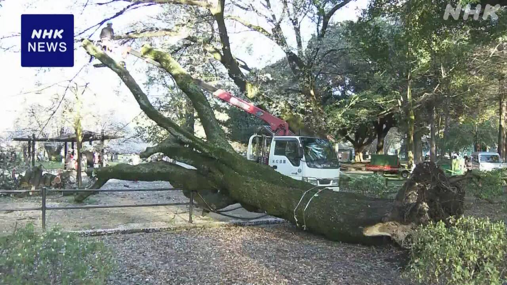
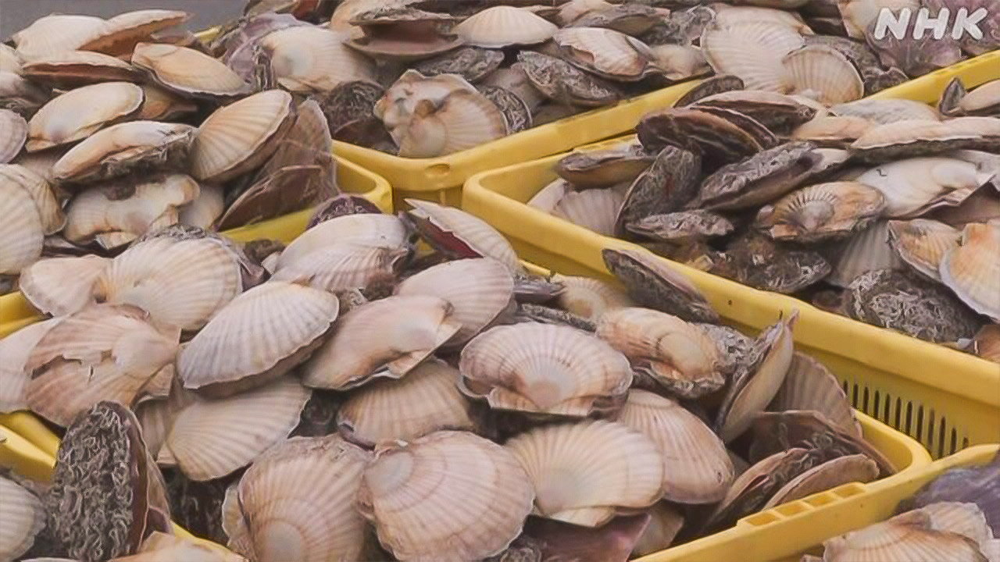

最新ニュース
1️⃣ アメリカ軍がイランの橋を攻撃 8人が亡くなった
アメリカ軍が、2日、イランの首都テヘランの近くにある橋を攻撃しました。
イランのメディアによると、橋の近くにいた家族など8人が亡くなって、95人がけがをしました。
アメリカのトランプ大統領は、橋が壊れる様子の動画をSNSに出しました。そして、「イランでいちばん大きい橋が壊れた。早くしないと、イランに何も残らないだろう」と書いて、アメリカの言うとおりにするように言っています。
イランの政府は「橋や建物を攻撃しても、私たちは負けない」と言って、最後まで戦うと話しています。
2️⃣ マイクロソフト「 日本でAIに1兆6000億円を投資する」
アメリカのマイクロソフトが、日本でAIに1兆6000億円を出す投資の計画を発表しました。
日本の会社と一緒にデータセンターをよくしたり、専門の技術を持つ人を100万人育てたりしたいと言っています。
そしてサイバー攻撃を受けないように、日本の政府や警察に協力すると言っています。
マイクロソフトの社長は、3日、高市総理大臣に会って、この計画を伝えました。
高市総理大臣は「これからも協力していきたい」と話しました。
3️⃣ 東京の公園で桜の木が倒れた

桜の花がきれいに咲いている公園で、突然、桜の木が倒れました。
東京の世田谷区にある砧公園で2日の午後、60年ぐらい前からある桜の木が倒れました。高さ20m、太さ2m50cmぐらいの木です。
この公園では、倒れそうな木がないかどうか、6か月で、3回、調べていました。この木は問題ありませんでした。
東京都は、木が倒れた原因を調べています。
近くで花見をしていた大学生は「バリバリバリという音が突然、聞こえて、木が倒れました。もし、自分が木の下になっていたらと考えたら、とても怖いです」と話していました。
この公園では、先月も、桜とヒマラヤスギの木が倒れました。けがをした人もいました。
4️⃣ 北海道 春のホタテ漁が始まった

北海道で春のホタテ漁が始まりました。
ホタテは、さしみにしたり、バターで焼いたりして食べる貝です。
根室市で、ホタテをとった船が港に戻ってきました。全部で20tぐらいとれました。大きいホタテがたくさんありました。
市場では、いちばん高い値段が1kg880円になりました。去年より200円ぐらい高くなっています。
漁をしている人は「甘くておいしいホタテをみなさんに届けたいです」と話していました。
- 〜によると
- 〜など
- 〜ように
- 〜ている / 〜でいる
- 〜ても / 〜でも
- 〜まで
- 〜たり〜たりする
- 〜から
- 〜くらい / 〜ぐらい
- 〜という
- 〜になる
- 〜より
vebaev.github.io
Generated: 2026-04-03 11:39:55 UTC